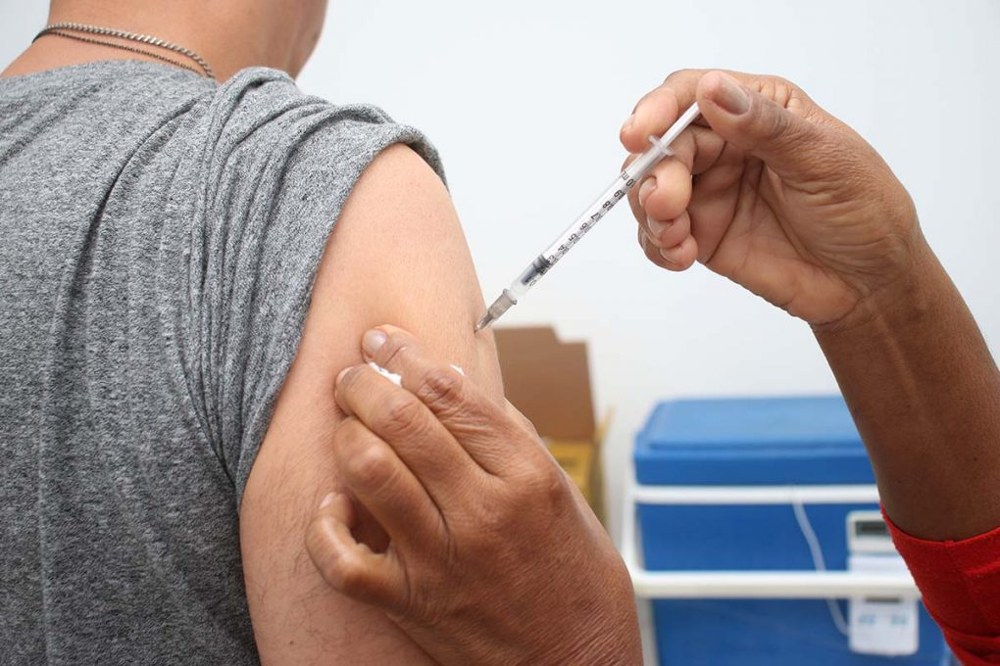
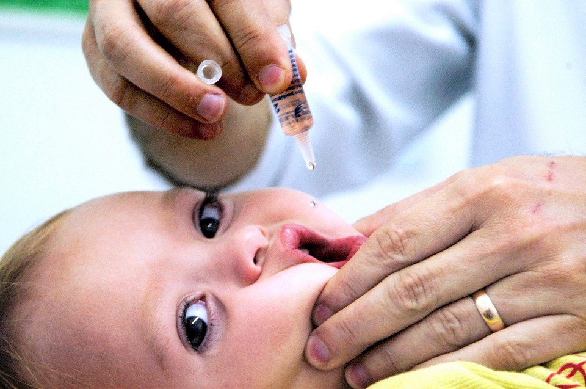
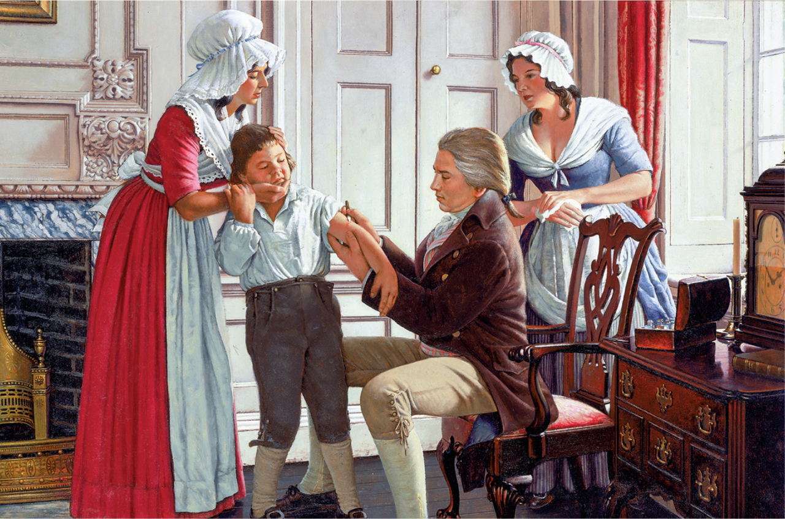
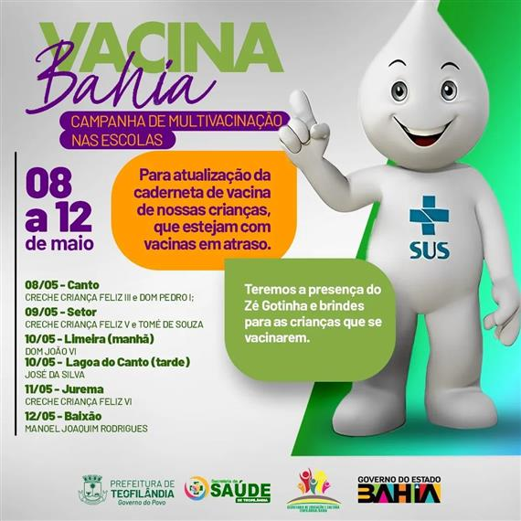
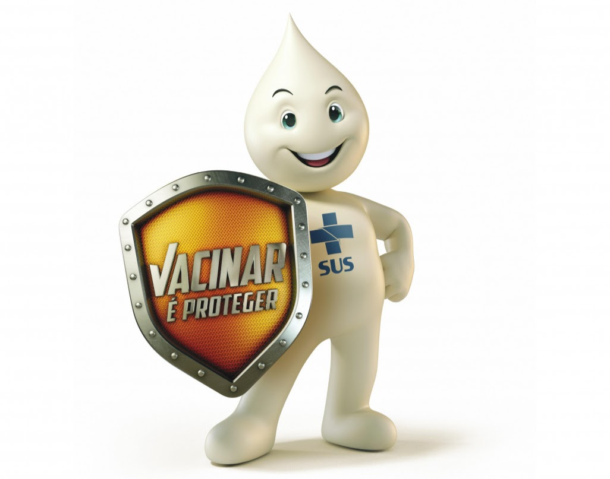
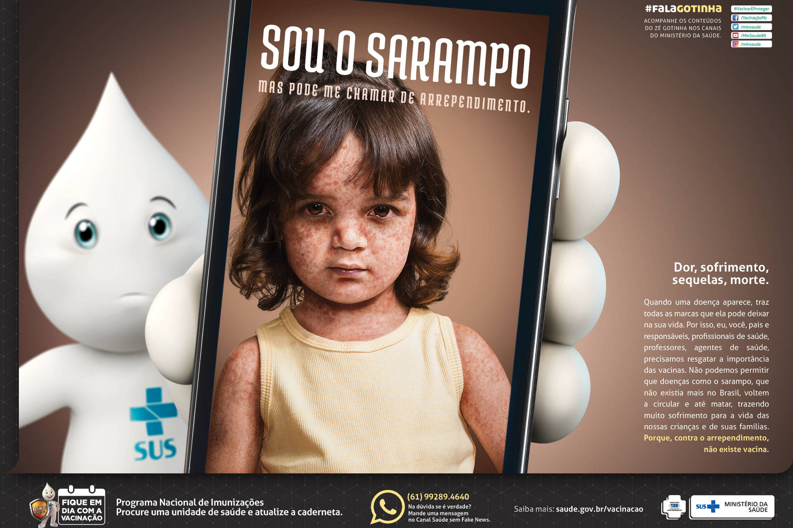

O que são as vacinas?
As vacinas são substâncias biológicas que tem finalidade de induzir a resposta imunológica (imunidade adquirida ativa) do organismo, com o objetivo de proteger o indivíduo contra uma determinada doença (profilática) ou evitar que ela se desenvolva de maneira severa (terapêutica).
A história da vacina
A história da vacina iniciou-se no século XVIII, quando o médico inglês Edward Jenner utilizou a vacina para prevenir a contaminação por varíola, uma doença viral extremamente grave que causava febre alta, dores de cabeça e no corpo, lesões na pele e morte. A varíola foi a primeira doença infecciosa que foi erradicada por meio da vacinação.
Vacinas no Brasil
A política de vacinação é responsabilidade do Programa Nacional de Imunizações (PNI) do Ministério da Saúde. Estabelecido em 1973, o PNI desempenha um papel fundamental na promoção da saúde da população brasileira. Por meio do programa, o governo federal disponibiliza gratuitamente no Sistema Único de Saúde - SUS 50 imunobiológicos: 32 vacinas, 13 soros e 5 imunoglobulinas. Esses imunobiológicos incluem tanto as vacinas da rotina, presentes no calendário nacional de vacinação, quanto vacinas e imunoglobulinas indicadas para grupos em condições clínicas especiais, como pessoas com HIV , pessoas em tratamento de algumas doenças (câncer, insuficiência renal, entre outras), bebês muito prematuros ou com comorbidades, dentre outros, aplicadas nos Centros de Referência para Imunobiológicos Especiais (CRIE)/RIE, e inclui também vacinações estratégias de campanha para grupos vulneráveis, como a covid-19 e a influenza (gripe).
Zé Gotinha
Zé Gotinha é um personagem brasileiro criado para as campanhas de vacinação contra o vírus da poliomielite com o objetivo de tornar o evento mais atraente para as crianças. Foi utilizado em campanhas nas décadas de 1980 e 1990 e na campanha de 2006, para a conscientização dos pais e as crianças sobre a importância da vacinação. O Zé Gotinha também é utilizado para alertar sobre a importância da prevenção de várias outras doenças.
Hesitação Vacinal
A hesitação vacinal refere-se ao atraso ou à recusa em aceitar vacinas recomendadas, mesmo quando os serviços de vacinação estão disponíveis. Trata-se de um fenômeno complexo e dinâmico, que varia conforme o tempo, o contexto, o território e o tipo de imunizante. É influenciada por múltiplos fatores, entre eles a confiança nas vacinas e nas instituições, a percepção de risco, o acesso às vacinas, a baixa percepção da gravidade de doenças que podem ser prevenidas com a vacinação, o contexto socioeconômico e cultual, além da comunicação. Esse comportamento pode comprometer as coberturas vacinais e favorecer o reaparecimento de doenças previamente controladas ou eliminadas pela vacinação. A hesitação vacinal não significa apenas recusar vacinas. Muitas vezes, envolve dúvidas, atrasos ou a escolha de tomar algumas vacinas e deixar outras para depois, resultando em risco para infecção e disseminação de doenças imunopreveníveis. Segundo a Organização Mundial de Saúde, a hesitação vacinal é umas 10 principais ameaças à saúde global.
Galeria





